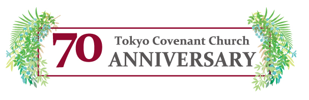
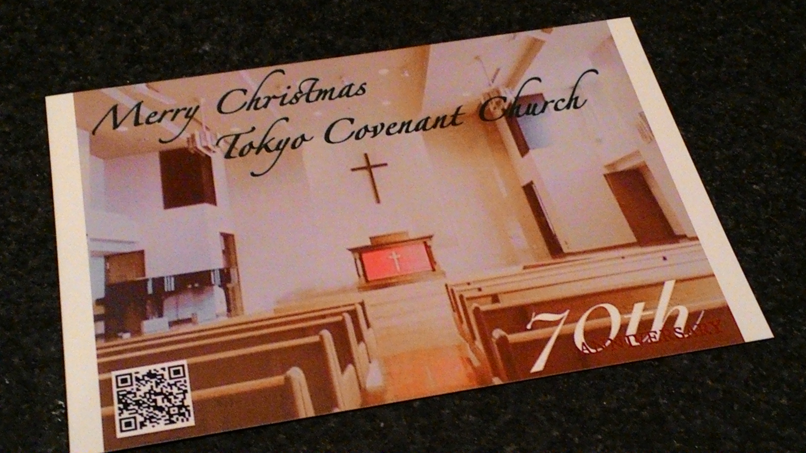

お問い合わせ
03-3321-4690
〒156-0044 東京都世田谷区赤堤4-27-14
Home
ホーム
Information
行事予定
宣教７０周年記念関連ページへようこそ！
東京カベナント教会は２０２０年に宣教７０周年を迎えます。 ここまでの歩みを守り、導いてくださった真実なる神様と支えて下さった皆様に心より感謝しております。 このページでは、７０周年行事に関するお知らせをお届けします.
今週の７０周年の準備
７０周年に向けた準備の様子を毎週少しずつ紹介します。
2019/12/8:
７０周年のお知らせのはがきを送らせていただきました。 
↑